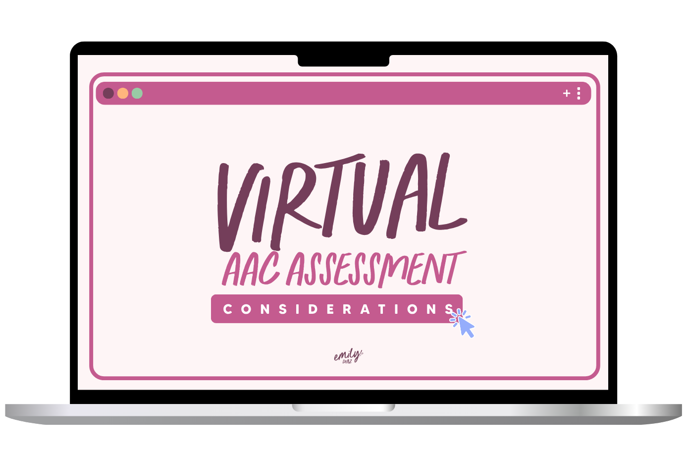
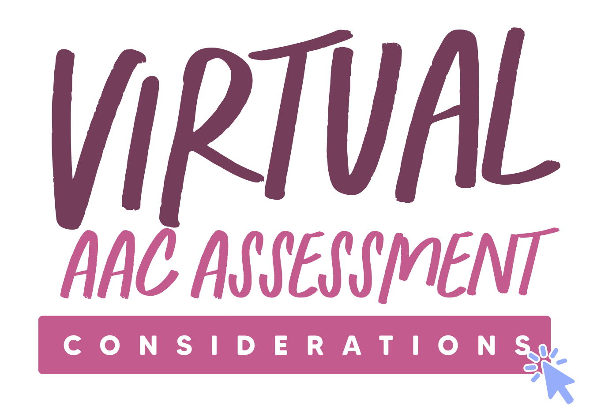
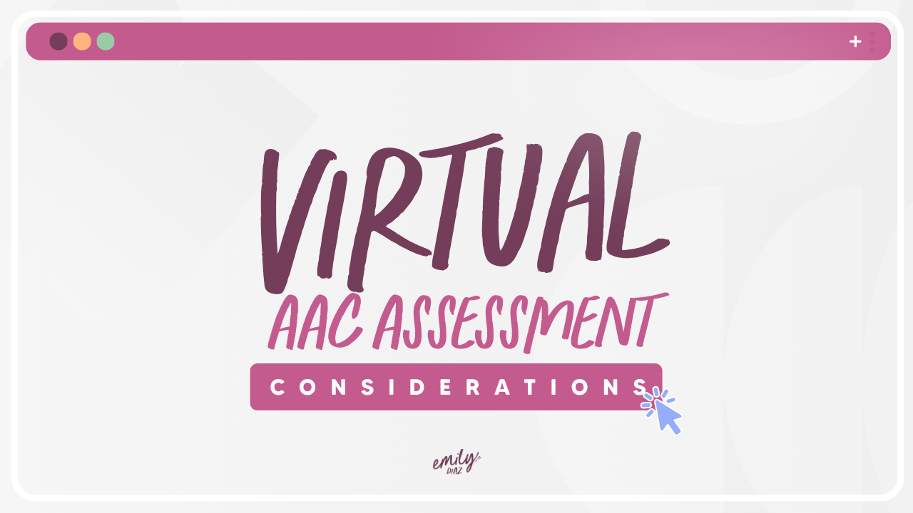

Run AAC assessments you can trust, even when you're not in the same room.
A step-by-step training that shows you how to decide when virtual is the right fit, set up your tech so you can actually see the AAC, and coach families into confident co-assessors.

Sound familiar?
A family needs an AAC eval, but you can't be in the room. Now what?
"Is tele-AAC even good enough?"
You've heard it's second-best. Parents tell you "my kid won't sit at a computer." Part of you believes them.
"How do I even get AAC mirrored on a screen?"
Mirroring the device, camera angles, seeing the child's hands and the display. It feels like a tech puzzle you weren't trained for.
"I need to be more hands-on."
No modeling on their device yourself. No trial therapy sessions in-person. You're relying on a parent you've barely met.
"What if I start and it falls apart?"
Licensure questions, payer rules, shaky internet. You're scared to scrap an eval halfway through or only get half the data.
Here's the truth: virtual AAC assessment isn't a watered-down version of the real thing.
Done right, it can be one of your strongest assessment tools.

Introducing
Virtual AAC Assessment Considerations
An on-demand video training from Emily Diaz that walks you through every piece of a remote AAC evaluation: from deciding if a family is a good fit, to the exact tech setup, to coaching a caregiver to be your hands and eyes in the room.
In March 2020, my caseload of complex communicators moved online overnight. I expected the worst. Instead, parents got curious about AAC and started using it at home, and it changed how I approach AAC evals for good. This training is everything I've learned since then.
What's inside
By the end, you'll be able to…
Decide
whether a virtual AAC assessment is the right fit for a family, using licensure, payer and readiness criteria.
Set up
the platform, internet, camera angles and display sharing you need to see and share AAC remotely.
Coach
a caregiver as your co-assessor, using evidence-based AAC modeling across the 5-step framework.
The roadmap
Reframing Tele-AAC
Your new role as observer, guide and coach. The real strengths (natural environment, siblings in the room), the honest limitations, and why who's in the room is your secret weapon.
Is Virtual the Right Fit?
Licensure and payer checks, the four conditions that make remote evals work, how to use your intake to decide, and the red flags that mean "go in person."
The Facilitator Role
How to prep your co-assessor before, during and after eval day, coach evidence-based AAC strategies, and make your modeling visible.
Wrap-Up
Five key takeaways so you can try it with your very next family.
Family-Centered Practice
What the research says about family buy-in, the three ways SLPs work with families, and how to move parents from watching to participating.
Tech Prep & Setup
HIPAA-compliant platforms, internet Plan B, two-camera setups, mirroring your iPad's AAC app live for the family, and shipping loaner devices.
The 5-Step Framework, Virtually
Each assessment step through a virtual lens, activities that work through a screen, and collecting data with family video clips between sessions.
Here's the best part
Get the complete training today for
$67
One payment. Less than an hour of your time to walk into your next virtual eval with a plan.
Get instant access for $67A future-proof purchase
Buy it once and it just keeps getting better.
Lifetime access
Rewatch any section right before your next virtual intake or eval day. Whether you need it now or need it a year from now. You always have instant access.
Free future updates
Platforms, apps and payer rules change. When the training is updated, you get it at no extra cost.
Still on the fence?
Let's talk about what's holding you back
"Virtual just isn't as good as in-person."
It's different, but not lesser. You see the child communicate in real routines with real partners, and kids are often more themselves at home. You'll learn exactly how to use that to collect meaningful data.
"I'm not a tech person."
You don't need to be. I'll show you the platform, camera angles and how to mirror your iPad's AAC app step by step, plus a Plan B for when video drops.
"My families won't be able to handle it."
Some won't, and that's okay. You'll get clear fit criteria and red flags, so you only go virtual when it'll work, and know when to say no.
"I don't have time for another course."
It's only an hour, broken into several bite-sized sections. Watch it on a lunch break and use it with your next family.
Questions?
Frequently asked questions
Who is this training for?
SLPs who complete AAC evaluations, or want to, with families or schools they can't always reach in person: private practice, school contractors and clinicians serving rural or medically fragile clients.
How long is it, and how is it delivered?
It's an on-demand 1 hour video training, organized into seven sections. Start right after purchase and watch at your own pace.
I've never done tele-AAC. Is this too advanced?
Not at all. It starts with reframing what tele-AAC is and walks through fit, tech setup and caregiver coaching from the ground up.
Do I need special equipment?
You'll need a HIPAA-compliant video platform and reliable internet. The training covers the exact setup I use (including mirroring an iPad to a computer screen) and what to do with what you already have.
Is this part of the AAC Assessment Hub?
It pairs with the Hub's 5-step framework, and works on its own too. If you want full modules, data sheets and downloads for each step, the AAC Assessment Hub goes deeper.
How long do I have access?
For life, including any future updates to the training.
Here's everything you get
Virtual AAC Assessment Considerations

- The full 60 minute video training in 7 sections
- Fit criteria and red flags for deciding when virtual works
- My tech setup: platform, cameras, display mirroring and loaners
- A before, during and after plan for coaching your facilitator
- The 5-step framework through a virtual lens, with video-feedback data collection
- Lifetime access and free future updates
Your next family doesn't have to be in the room for you to get it right.
Get Virtual AAC Assessment Considerations and walk into your next remote eval with a plan, a setup and a confident co-assessor.
$67
Get instant access nowInstant access · Lifetime access · Free updates